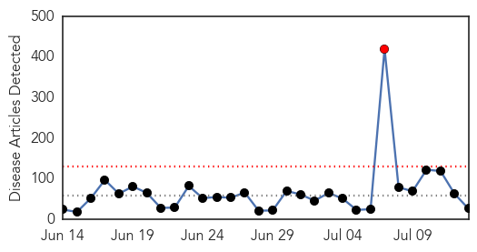
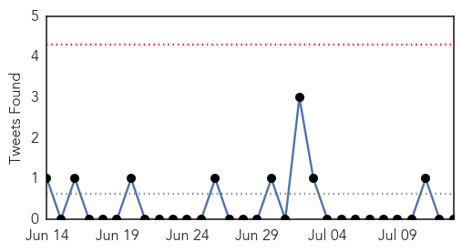
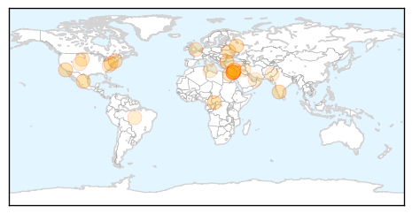
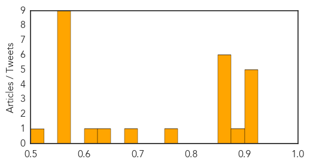

Ebola
30-Day Web Trend
12 alerts, 10 warnings

30-Day Twitter Trend
1 alerts, 1 warnings

Article Locations

Article Confidences

Top Articles:
- 1.000
- Ebola deaths rise in Sierra Leone, Liberia
- 1.000
- Ebola deaths mount in Sierra Leone and Liberia
- 1.000
- Ebola virus outbreak in Techiman is imminent
- 1.000
- Uganda alert to Ebola attack
- 1.000
- Ebola 101: The Facts Behind A Frightening Virus
- 1.000
- Worst Ebola outbreak, poor response - Guinea
- 1.000
- Ebola Epidemic Spreads to Freetown
- 0.999
- Zambia National Broadcasting Corporation
- 0.999
- As Ebola stalks West Africa, medics fight mistrust, hostility
- 0.999
- Ebola deaths surge in Sierra Leone and Liberia
- 0.999
- As Ebola stalks West Africa, medics fight mistrust, hostility
- 0.999
- As Ebola stalks West Africa, medics fight mistrust, hostility
- 0.998
- Ebola Outbreak Reaches Sierra Leone Capital of Freetown
- 0.995
- I survived Ebola, but villagers shunned me
- 0.994
- Doctors a 'death sentence'? Patient mistrust aggravates Ebola treatment
- 0.986
- As Ebola stalks West Africa, medics fight mistrust, hostility
- 0.980
- Zambia National Broadcasting Corporation
- 0.980
- Firefighter injured battling Baltimore house fire
- 0.980
- A new venue for Riot Fest
- 0.980
- Heroin overdose rise prompts Maryland crackdown
- 0.980
- Ravens cornerback Jimmy Smith arrested, released by police
- 0.980
- Ravens Cornerback Arrested In Towson
- 0.980
- Police make arrest in Glen Burnie stabbing
- 0.979
- The recent Ebola outbreak
- 0.974
- Ebola spreads to Sierra Leone capital
- 0.881
- Wife of vice president meets with Congo’s sexual violence survivors
- 0.591
- CU-Boulder to offer public health certificate
Top Tweets:
-
No tweets found for Jul 13, 2014
Unknown
30-Day Web Trend
1 alerts, 0 warnings

30-Day Twitter Trend
0 alerts, 0 warnings

Article Locations
Article Confidences
Top Articles:
- 0.917
- Chicago Tribune
- 0.917
- Chicago Tribune
- 0.917
- Chicago Tribune
- 0.917
- Chicago Tribune
- 0.917
- Chicago Tribune
- 0.891
- PardaPhash: Latest Indian Breaking News, Sting operations
- 0.866
- Israeli forces shell Lebanon after cross-border rocket attack
- 0.866
- Rockets fired at Israel from Lebanon -sources
- 0.866
- Three killed in a blast in Egypt's Sinai region
- 0.866
- A pro-Russian separatist stands guard nearby a rally in support of Novorossiya (New Russia) on Lenin Square in the center of Donetsk
- 0.866
- Russia warns Ukraine of "irreversible" consequences after shelling
- 0.852
- Tick checks urged year after Lyme disease peaked
- 0.771
- Anthrax scare reveals more CDC lab safety problems
- 0.683
- Diarrhea-causing disease spreading through western South Dakota
- 0.640
- One in three Alzheimer's cases preventable, says research
- 0.609
- Gaza: A Population Under Siege
- 0.561
- Man with Plague in Colorado in Stable Condition…For Now
- 0.557
- UAE doctors issue dehydration warning to fasting Muslims
- 0.551
- Thousands flee northern Gaza after Israeli warning
- 0.551
- Legendary conductor Lorin Maazel dies aged 84
- 0.551
- Rival Libyan militias exchange heavy fire at Tripoli airport
- 0.551
- Israeli navy attacks Hamas base as tanks line up along Gaza border
- 0.551
- Iraqi parliament fails to agree on new leadership
- 0.551
- Major differences remain as deadline looms in Iran nuclear talks
- 0.551
- Boko Haram claims Nigeria attacks and supports Iraqi militants
- 0.523
- Running a Hospital in a Syrian Village Under Siege
Top Tweets:
- 0.639
- RT: Las mujeres de hoy día están tan enfocadas en actuar igual que el hombre, que se olvidan de los valores, dignidad y rol…
- 0.638
- En mi coraz√≥n ARG fue campeonnnn! Dieronnn un juego de respeto! Sigo sin superar el offside y el penalllll ! Pero disfrute del partido! üëè